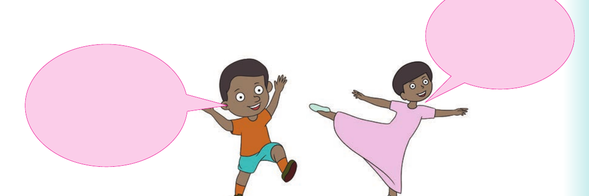
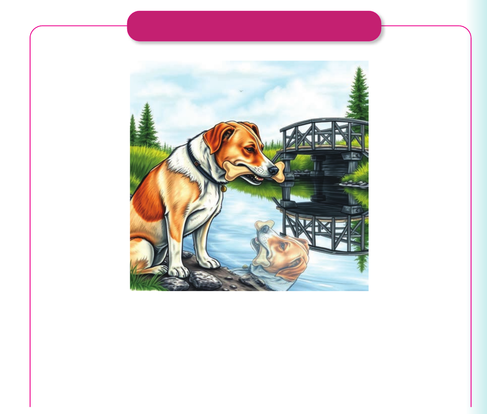

I tell or sign stories

I tell or sign stories. Telling or signing stories is very interesting. Sure. I enjoy doing it.
Activity 1
1. Read aloud or sign the following stories:
(a) The dog and the bone Once upon a time, there was a dog. He usually walked on the streets searching for food. One day, he found a fresh bone on the street. He quickly grabbed it with his mouth. He took it home. On his way home, he reached a river. In the river, he saw another dog. It had a bone
(a) The dog and the bone

Once upon a time, there was a dog. He usually walked on the streets searching for food. One day, he found a fresh bone on the street. He quickly grabbed it with his mouth. He took it home.
On his way home, he reached a river. In the river, he saw another dog. It had a bone